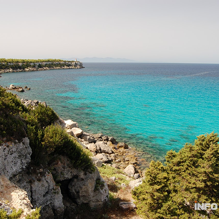

Esplora questa sezione ed indaga sulle attività che più si addicono ai tuoi interessi!

Attività:
Giro in canoa(6 h)
Pagaiando tra acque cristalline e calette nascoste, vivi il Parco dell’Arcipelago Toscano da un punto di vista unico. Un’esperienza rilassante e suggestiva a stretto contatto con il mare e la natura.
Trakking (5 h)
Sentieri panoramici, profumi mediterranei e viste mozzafiato: il trekking nell’Arcipelago Toscano è un viaggio tra terra e mare, alla scoperta di paesaggi incontaminati e biodiversità sorprendente.
Scuba Diving (3 h)
Scendi nei fondali dell’Arcipelago Toscano per un’immersione tra relitti, pareti rocciose e fauna marina. Un’avventura subacquea emozionante in uno dei tratti di mare più affascinanti del Mediterraneo.